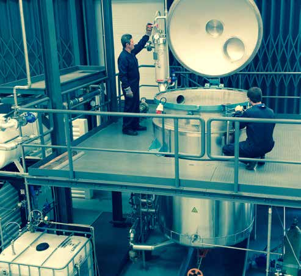

Tecnologias de extração industrial concebidas para preservar a integridade dos compostos naturais sensíveis à temperatura.
O nosso processo de extração a baixa temperatura garante a preservação de compostos termolábeis e voláteis. Sem exposição ao oxigénio, produzimos extratos de qualidade superior que mantêm as suas propriedades ativas intatas.
Uma vez que o CO2 é considerado seguro (GRAS pela FDA), o extrato final não contém resíduos de solventes químicos artificiais. Estes extratos são adequados para aplicações nas indústrias alimentar, farmacêutica e cosmética.


Extração avançada de óleos essenciais através do arrasto por vapor de água, permitindo separar as frações voláteis da matriz biológica, recuperando também os preciosos hidrolatos (águas florais).
Processo de desidratação através de sublimação sob vácuo que remove a água enquanto a amostra está congelada. Permite a obtenção de pós de altíssima qualidade mantendo a estrutura biológica original sem degradação térmica.


Cultura de precisão e em escala de bactérias e leveduras utilizando biorreatores avançados com controlo de processos (pH, oxigenação, temperatura). Fundamental para a obtenção de metabolitos específicos e crescimento de biomassa.